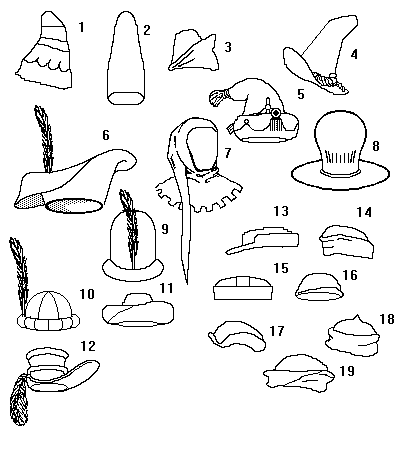

Germanic and Flemish Hats

- (c1260)
- Sugarloaf Hat (c 1456)
- (c1490)
- "Netherlandish" Beaverskin hat. Worn c1430-1480
- (c1470)
- Felt Hat (15th C)
- Hood with castelated edges (14th C.)
- (c1430)
- Flemish (c1460)
- (c1490)
- (c1460)
- (c1395)
- (c1450)
- (c1450)
- (c1420)
- (c1490)
- (c1450)
- (c1395)
- (c1450)
Some Headwear of the Middle Ages - Germanic and Flemish Hats, by I. Marc
Carlson. Copyright 1996.